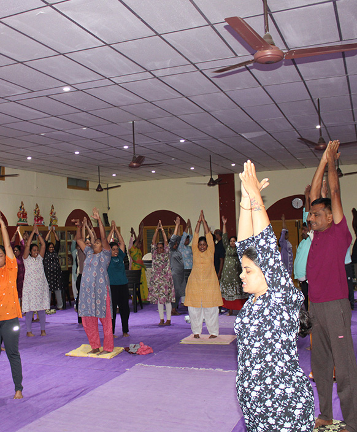
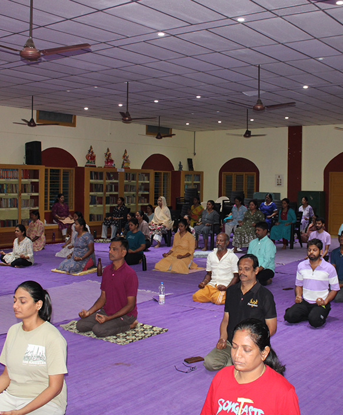
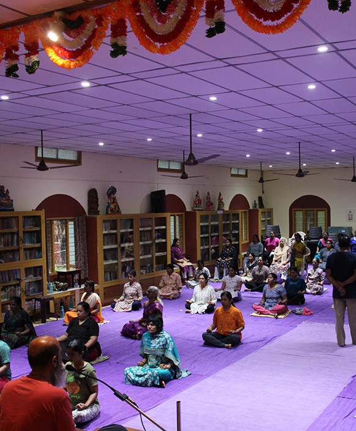

A three-day Sittha Viruthi Yoga Residential Meditation camp was successfully conducted from March 27 to 29, 2026, at Chinmaya Ashram .A total of 65 participants attended the program. The participants included both men and women from different age groups and from different levels of Sittha Viruthi Yoga practice. The Meditation camp provided a peaceful and powerful environment for learning, healing, and inner growth. This Sittha Viruthi Yoga residential program, which is conducted once every three months, helps participants move forward in life with inner strength, emotional balance, and clarity of mind.
Day 1 – Cleansing and Understanding Energy
The first day began with a special practice called Aura Cleansing by Fire. Incense sticks were used along with the chanting of Bija Mantras.
Participants were given a clear explanation of:- What the energy body (aura) is
- How negative energy gets stored
- How aura cleansing helps remove negativity
- How positive energy can be received
This was followed by a guided and detailed practice session, where each participant performed aura cleansing with care and sanctity.
Next, participants were guided through meditations on:- The five elements (Pancha Bhootas)
- The nine planets (Navagraha Dhavam)
- The five senses (Panchendriyas)
An explanation was also given about Vethathiri Maharishi’s “Sarva Vashya Dhana Harshana Sangalpam”, a powerful universal prayer.
This prayer invokes blessings from divine forces for:- Prosperity
- Peace
- Harmony
The day ended with an interactive Question and Answer session, where participants clarified their doubts related to:
- Health
- Mind and emotions
- Relationships

Day 2 – Healing Practices and Energy Strengthening
The second day began early in the morning with:
- Yoga Asanas (physical exercises)
- Breathing techniques ( Pranayama)
These were conducted for participants who had completed higher-level training.
For foundation-level participants, a Chakra Cleansing practice was conducted.The sessions during the day included:
1. Aura Cleansing by FireParticipants once again practiced energy cleansing to strengthen their understanding and experience.
2. Chakra Cleansing through SoundAll seven chakras were cleansed using the powerful vibrations of Bija Mantras.
3. Dhuria Dheedha MeditationA deep meditation practice that helped participants experience inner stillness and awareness.
4. Dhana Harshana Sangalpam RitualBased on the teachings of Vethathiri Maharishi. It was a powerful guided ritual.
Participants chanted Bija Mantras to invoke blessings from divine energies for:- Prosperity
- Health
- Family well-being
Participants learned a practical healing method using:
- Universal energy
- The chanting of “Om”
They were taught how to use this energy for self-healing and helping others.
6. Understanding the Protective Energy ShieldA special session explained how the use of an imaginary pyramid can act as a protective shield.
Participants learned:- How universal energy protects us
- How to apply this knowledge in daily life
This session was very useful, as many participants had prior knowledge but needed clarity on how to use it.
The day concluded with another Question and Answer session to clear doubts and deepen understanding.

Day 3 – Deep Meditation and Inner Transformation
Early morning ,Chakra Cleansing practices were conducted for all the participants.
The third day focused on deeper spiritual practices and inner transformation.
1. Chakra Cleansing and EnergisingAll seven chakras were cleansed and energised again using Bija Mantras.
2. Nine-Centred Deep Meditation (45 Minutes)This was a powerful and guided meditation process:
- Starting from the Mooladhara (root chakra)
- Moving through all seven chakras
- Expanding upwards to:
- Dhuriam
- Moon
- Stars
- Shakthi Kalam
- Shiva Kalam (expansion of the energy body)
Then the awareness was brought back down from Shiva Kalam to the lower chakras.
3. Anima Meditation (Energy Minimisation)In the final session, participants practiced:
- Reducing or minimising the energy body (Anima)
- Focusing the mind on a single point
This helped in achieving deep concentration and inner stillness.



Feedback and Experiences
Sittha Viruthi Yoga camp ended with a feedback session, where participants shared their experiences. It was a very positive and emotional session. Many participants expressed that:
They felt deeply peaceful
They experienced strong inner transformation
They gained clarity and confidence
They gained self-awareness
Benefits of the Sittha Viruthi Yoga Residential Program
The three-day Sittha Viruthi Yoga residential camp provided many powerful benefits:
- Cleansing of negative energy caused by emotional experiences
- Relief from stress, tension, and physical discomfort
- Strengthening of chakras to receive universal energy
- Improved mental health and emotional balance
- Better understanding of relationships
- Inner peace and stillness of mind
- Clarity in thoughts and decision-making
- Opportunity for Sat Sangh (spiritual gathering and sharing)
- Learning through questions, answers, and shared experiences
Most importantly, the program helped participants understand that: Meditation is a powerful tool for building inner strength, awareness, and positive energy.


Conclusion
This Sittha Viruthi Yoga residential meditation camp was a deeply enriching and transformative experience for all participants. Through guided practices, healing techniques, and spiritual teachings, participants were able to connect with themselves at a deeper level.
The regular conduct of such programs every three months ensures that individuals continue their journey with:
- Stronger minds
- Balanced emotions
- Greater awareness
- A peaceful and purposeful life
It was announced that the next Sittha Viruthi Yoga Residential Meditation Camp will be held from June 26 th - to June 28 , 2026 .